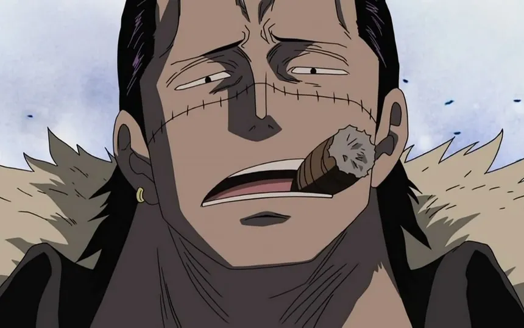

| 1 |
Romance Dawn |
East Blue |
1 à 7 |
Fruit du Caoutchouc |
Morgan |
|
| 2 |
Village Orange |
East Blue |
8 à 21 |
Fruit de la Fragmentation |
Baggy le Clown |
|
| 3 |
Village d'Usopp |
East Blue |
22 à 41 |
Pas de nouveau fruit |
Capitaine Kuro |
|
| 4 |
Baratie |
East Blue |
42 à 68 |
Pas de nouveau fruit |
Don Krieg |
|
| 5 |
Arlong Park |
East Blue |
69 à 95 |
Pas de nouveau fruit |
Arlong |
|
| 6 |
Logue Town |
East Blue |
96 à 100 |
Fruit Fumigène |
Smoker |
|
| 7 |
Reverse Mountain |
Alabasta |
101 à 105 |
Pas de nouveau fruit |
Laboon (pas vraiment un anta mais a tenté de les bouffer) |
|
| 8 |
Whiskey Peak |
Alabasta |
106 à 114 |
Fruit de l'explosion |
Mister 5 |
|
| 9 |
Little Garden |
East Blue |
115 à 129 |
Fruit de la Cire |
Mister 3 |
|
| 10 |
Royaume de Drum |
East Blue |
130 à 154 |
Fruit du Glouton |
Wapol |
|
| 11 |
Alabasta |
East Blue |
155 à 217 |
Fruit du Sable |
Crocodile |

|
| 12 |
Jaya |
Skypiea |
218 à 236 |
Fruit du Ressort |
Bellamy |
|
| 13 |
Skypiea |
Skypiea |
237 à 302 |
Fruit de la Foudre |
Ener |
|
| 14 |
Long Ring Long Land |
Water Seven |
303 à 321 |
Fruit DU Ramollo |
Foxy |
|
| 15 |
Water Seven |
Water Seven |
322 à 374 |
Fruit des Portes |
CP9 (Lucci surtout) |
|
| 16 |
Enies Lobby |
Water Seven |
375 à 430 |
Fruit de la Girafe, du Loup et du Léopard |
CP9 (Lucci surtout) |
|
| 17 |
Post Enies Lobby |
Water Seven |
431 à 441 |
Pas de nouveau fruit |
Garp (pas vraiment un anta mais bon) |
|
| 18 |
Thriller Bark |
Thriller Bark |
442 à 489 |
Fruit des Ombres |
Gecko Moria |
|
| 19 |
Archipel des Sabaody |
Guerre au Sommet |
490à 513 |
Fruit de la Lumière |
Kizaru |
|
| 20 |
Amazon Lily |
Guerre au Sommet |
514 à 524 |
Fruit de l'Amour |
Soeurs de Hancock |
|
| 21 |
Impel Down |
Guerre au Sommet |
525 à 549 |
Fruit du Poison |
Magellan |
|
| 22 |
Marineford |
Guerre au Sommet |
550 à 580 |
Fruit du Magma |
Akainu |
|
| 23 |
Post MarineFord |
Guerre au Sommet |
581 à 597 |
Pas de Nouveau fruit |
Pas d'Antagoniste |

|
| 24 |
Retour sur Sabaody |
Ile des Hommes-Poissons |
598 à 602 |
Pas de Nouveau fruit |
Pacifistas |
|
| 25 |
Ile des Hommes-Poissons |
Ile des Hommes-Poissons |
603 à 653 |
Fruit du Ciblage |
Hody Jones |
|
| 26 |
Punk Hazard |
Dressrosa |
654 à 699 |
Fruit du Gaz |
César Clown |

|
| 27 |
Dressrosa |
Dressrosa |
700 à 801 |
Fruit des Fils |
Doflamingo |
|
| 28 |
Zou |
Whole Cake Island |
802 à 822 |
Fruit du Mammouth |
Jack |
|
| 29 |
Whole Cake Island |
Whole Cake Island |
822 à 902 |
Fruit des Ames |
Big Mom |
|
| 30 |
Rêverie |
Whole Cake Island |
903 à 908 |
Pas de Nouveau fruit |
Im Sama |
|
| 31 |
Wano Kuni |
Wano Kuni |
909 à 1057 |
Fruit du Dragon |
Kaido |
|
| 32 |
Egg Head |
Saga Finale |
1058 à 1125 |
Fruit de l'Intelligence |
Gorosei |
|
| 33 |
Elbaf |
Saga Finale |
1126 à ??? |
Pas de nouveau fruit confirmé |
Im Sama |
|